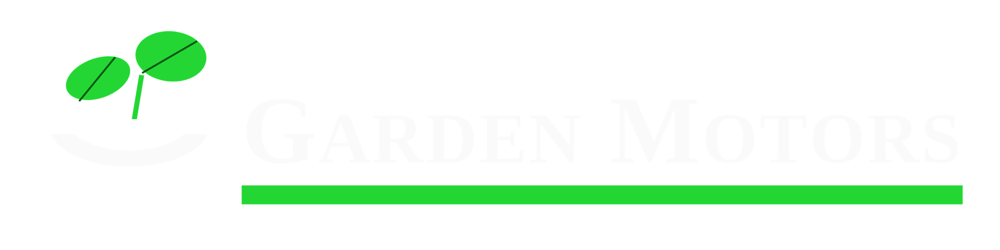

Tarayıcınız 3D showroom'u desteklemiyor. İlanlarımızı sahibinden.com'da inceleyebilirsiniz.
Galerimize adım atın. Aşağı kaydırdıkça kapıdan girip ilandaki araçlarımızı tek tek gezeceksiniz.
Seçkin araçlarımız sizi bekliyor
Tüm güncel ilanlarımızı sahibinden.com mağazamızda bulabilir, ekspertiz ve takas seçenekleri için bizimle iletişime geçebilirsiniz.